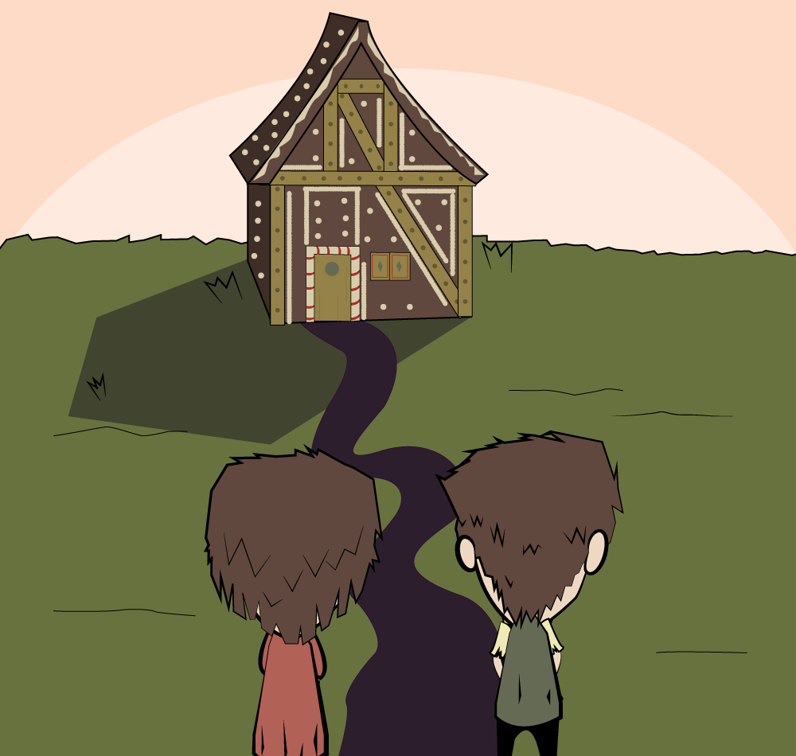
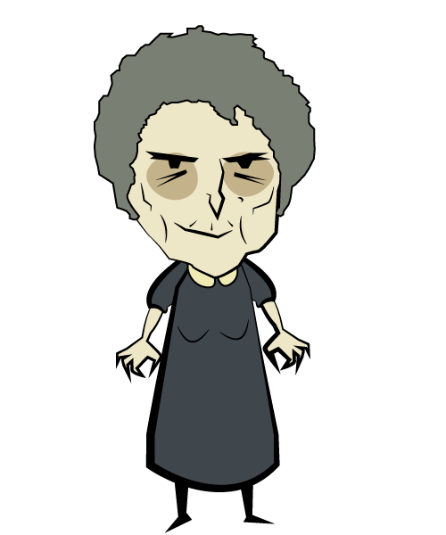
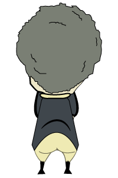
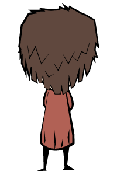

Em tempos difíceis aonde tinham muito pouco com que se alimentar vivia na floresta um pobre lenhador com sua mulher e dois filhos, João e Maria
Com a fome ficando pior a cada dia, a madrasta convence seu marido de levar as crianças até a floresta aonde os abandonariam, assim o casal não iria morrer de fome.
No dia seguinte após ter ouvido o plano, João pega um pedaço de pão e no caminho para a floresta deixa uma trilha de migalhas para conseguirem voltar para casa. Porém assim que abandonados, as crianças percebem que os pássaros comeram as migalhas e estavam perdidos na floresta.
Após dias caminhando, João e Maria se deparam com um chalé feito de pão de mel, bolo e doces. Cansados e famintos, começam a comer o que tinham encontrado
Assim que começam, a porta se abre, uma velha bruxa aparece e os convence a entrar, com a promessa de um lugar para dormir e comer.
No dia seguinte, a bruxa tranca João em uma gaiola e faz de Maria sua escrava.
A bruxa alimentava regularmente João para engorda-lo, porém ele mantinha um osso o qual oferecia para a bruxa sentir, devivo a cegueira ela acreditava que era seu dedo e ainda estava muito magro para que ela pudesse comer.
Após várias semanas, a bruxa fica impaciente e decide não esperar, então pede para Maria acender o fogo. Quando a bruxa se inclina no fogão para ver se estava quente o suficiente, Maria empurra a bruxa para dentro e fecha a porta, deixando-a queimar até a morte.
 Os irmãos recolhem o tesouro da bruxa e então partem. Quando finalmente encontram sua casa, se deparam com seu pai de luto e arrependido pela morte de seus filhos e que a madrasta havia morrido de fome. Graças o tesouro da bruxa, a familia se tornou rica e nunca mais precisou se preocupar com comida novamente.